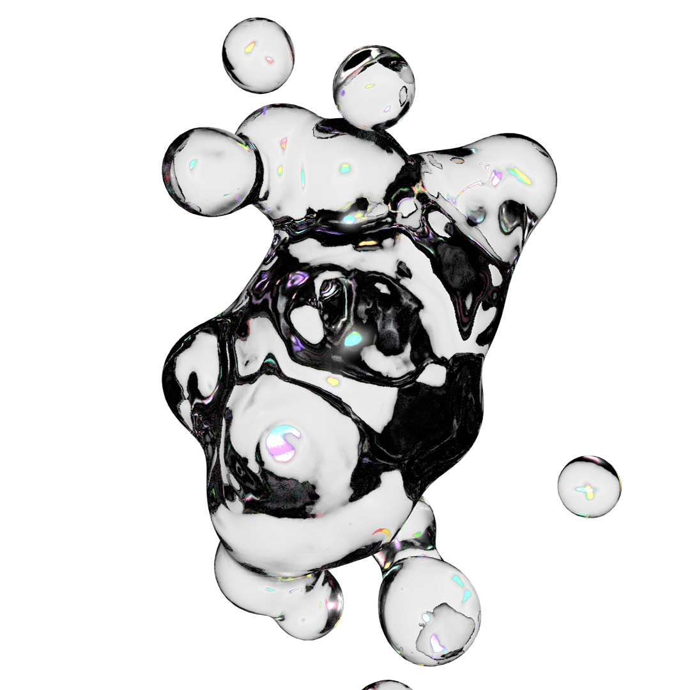

Telepresence was an end of the year group showcase for first year students in Parsons' MFA Design & Technology program. The pandemic necessitated a shift to a virtual venue. The graphic identity was created in collaboration with Livia Foldes. I designed and animated all of the 3D assets used on the site and to promote the show on social media. The site can be visted at mfadt.space and is archived here.